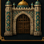

Ana Beyin
Ana Beyin
Dünya Yönetimi
Dünya seviyesi, özel XP, otomatik denge, dünya olayları, kişisel
hedefler, başarımlar ve canlı sıralamalar.
AYRI DETAY SAYFASINI AÇ →
Hızlı özet
-
Dünya seviyesi doğal faaliyetler, ekonomi, meslek ve kasaba
katkılarıyla yükselir.
-
Dünya XP’si ve bir sonraki seviye hedefi ana menüden
izlenir.
-
Ana Beyin sunucu gelişimini ölçerek otomatik hedef ve denge
katsayısı üretir.
-
Kişisel hedefler, başarımlar, katkı ve ilk 10 sıralamaları
kalıcı tutulur.
-
Yönetici, dengeyi simüle edebilir ve dünya seviye geçmişini
inceleyebilir.
 Ekonomi
Ekonomi
Ekonomi ve Banka
Bakiye, para transferi, banka hesapları, borç düzeni, işlem
geçmişi ve kasaba hazinesi.
AYRI DETAY SAYFASINI AÇ →
Hızlı özet
-
Oyuncu bakiyesi ve işlem kayıtları ortak ekonomi sistemi
tarafından yönetilir.
-
Bankacı NPC hesap, para yatırma/çekme ve transfer
işlemlerini açar.
-
Borç sistemi geri ödeme durumunu ve ekonomik riskleri izler.
-
Kasaba hazinesi ekonomiyle bağlantılı çalışır; ayrı ve kopuk
para kaydı oluşmaz.
-
Dünya olayları alış, satış ve kazanç katsayılarını geçici
olarak değiştirebilir.
Ticaret
Market ve Müzayede
Merkezî market, oyuncu pazarı, fiyat sistemi, satış noktaları ve
açık artırma işlemleri.
AYRI DETAY SAYFASINI AÇ →
Hızlı özet
-
Merkezî market sunucu tarafından tanımlanan ürün ve fiyat
düzenini kullanır.
-
Oyuncu pazarı oyuncuların kendi satış noktalarını kurmasını
sağlar.
-
Müzayedeci teklifleri, süreyi ve kazanan işlemini yönetir.
-
Alış ve satış hareketleri Dünya Ana Beynine ekonomi
etkinliği olarak iletilir.
-
İşlem onayı veya reddi NPC animasyonu ve kısa tepki
diyaloğuyla gösterilir.
 Gizli Ticaret
Gizli Ticaret
Kara Borsa
Üç gecede bir açılan, erişim şartlı ve sınırlı stoklu özel
pazar.
AYRI DETAY SAYFASINI AÇ →
Hızlı özet
- Tüccar meslek erişimi gerekir.
- Ruhsat veya 100 kasaba itibarıyla açılır.
- Sekiz alış ve altı satış teklifi günlük değişir.
- Kara Borsacı ve Boss Koleksiyoncusu rolleri bulunur.
- Stok ve oturum doğrulaması işlem güvenliğini korur.
Finans
Borsa
Dinamik fiyatlar, borsa görevlisi, alış-satış işlemleri ve
ekonomi etkileri.
AYRI DETAY SAYFASINI AÇ →
Hızlı özet
-
Borsa görevlisi güncel varlık fiyatlarını ve değişimleri
gösterir.
- Oyuncular uygun bakiye ile alış ve satış yapabilir.
-
Fiyat hareketleri ekonomi dengesi ve dünya olaylarından
etkilenebilir.
-
İşlem geçmişi oyuncunun finansal gelişimini takip etmeye
yardımcı olur.
-
Aşırı hızlı işlem ve yinelenen etkileşimlere karşı koruma
bulunur.
 Gelişim
Gelişim
Meslekler
Kalıcı ana meslek, üç alt meslek ve gerçek faaliyetlerden
kazanılan meslek XP’si.
AYRI DETAY SAYFASINI AÇ →
Hızlı özet
-
Oyuncu bir kalıcı ana meslek ve en fazla üç alt meslek
seçebilir.
-
XP yalnızca mesleğe uygun gerçek faaliyetlerden kazanılır.
-
Meslek seviyesi kişisel istatistiklere ve dünya gelişimine
katkı sağlar.
-
Meslek günlüğü profil, ilerleme ve uygun faaliyetleri
gösterir.
-
Mesleğe özel NPC sohbetleri, görev tepkileri ve görünüm
havuzları v1.6.44 paketine entegredir.
Köken
Irklar
İlk girişte atanan ırklar, seviye eşikleri, pasif yetenekler ve
dünya seviyesine bağlı gelişim.
AYRI DETAY SAYFASINI AÇ →
Hızlı özet
-
Irk ilk giriş sürecinde atanır ve oyuncu kimliğinin kalıcı
parçasıdır.
- Irk seviyesi Dünya seviyesini geçemez.
-
Pasif özellikler belirlenen seviye eşiklerinde açılır.
-
Irk gelişimi sıralamalarda ve kişisel istatistiklerde
gösterilir.
-
NPC konuşmaları oyuncunun ırkına ve itibarına göre
farklılaşabilir.

Hükümdarlık
Kasaba Yönetimi
Kasaba Lordu, sakinler, korumalar, hazine, geliştirmeler,
yetkiler ve savunma ilerlemesi.
AYRI DETAY SAYFASINI AÇ →
Hızlı özet
-
Kasaba Lordu oyuncu ve yönetici kasaba menülerinin
merkezidir.
-
Yetkili oyuncular sakin, koruma, hazine ve geliştirme
araçlarını kullanır.
-
Kasaba itibarı, özel XP, katkı ve başarılı savunmalar kalıcı
tutulur.
-
Muhafızlar devriye, vardiya ve alarm davranışlarına sahip
olacak şekilde hazırlanmıştır.
-
Kasaba merkezi arşivlenebilir, geri yüklenebilir ve Dünya
Ana Beynine kayıtlıdır.
Canlı Dünya
Dünya Olayları
İpek Yolu Kervanı, Sınır Boyu Akını ve Lale Devri Pazarı gibi
dinamik etkinlikler.
AYRI DETAY SAYFASINI AÇ →
Hızlı özet
-
İpek Yolu Kervanı teslimat karşılığında etkinlik ödülü
verir.
-
Sınır Boyu Akını kasaba merkezlerinde savunma dalgaları
başlatır.
-
Lale Devri Pazarı sırasında market alışları ucuzlar, satış
kazancı yükselir.
-
Aktif olay, kalan süre ve ilerleme Dünya menüsünde
gösterilir.
-
NPC diyalogları etkin olaya göre farklı cevaplar verecek
biçimde tasarlanmıştır.
Kayıt
İstatistik ve Başarımlar
Kişisel kayıtlar, hedefler, ilk 10 sıralamaları, katkı ve
gelişim ölçümleri.
AYRI DETAY SAYFASINI AÇ →
Hızlı özet
-
Kişisel etkinlik, katkı, meslek ve ırk gelişimi kaydedilir.
-
Dünya geneli merkez istatistikleri yönetim panelinden
izlenir.
-
Katkı, ırk ve meslek için canlı ilk 10 listeleri bulunur.
-
Kişisel hedefler oyuncuya sıradaki ilerleme adımını
gösterir.
-
Başarım ekranı açılan ve kilitli başarımları birlikte
gösterir.
Yönetim
Yönetici Merkezi
Sistem sağlığı, performans, bağlantılar, yedekler, yetkiler,
denetim geçmişi ve bakım araçları.
AYRI DETAY SAYFASINI AÇ →
Hızlı özet
-
Tam Yönetici, Etkinlik Yöneticisi ve Gözlemci yetki
seviyeleri bulunur.
-
Sistem sağlığı depolama, bağlantılar, çakışmalar ve çalışma
hatalarını gösterir.
-
Performans merkezi aktif kayıtları, temizliği ve çalışma
yoğunluğunu izler.
-
Ayar yedekleri, bakım, onarım ve güvenli sıfırlama araçları
bulunur.
-
Bütün önemli yönetici işlemleri denetim geçmişine
kaydedilir.